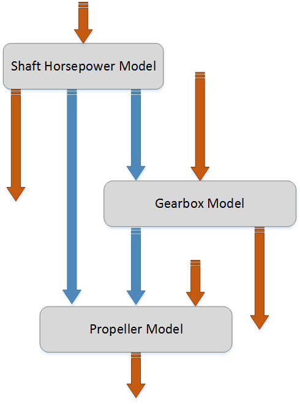
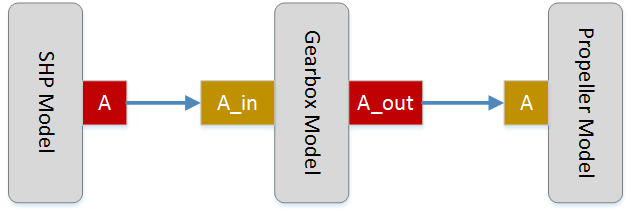

The Turboprop Model#
The TurbopropModel is an advanced EngineModel included with Aviary to assist in modeling propeller-driven propulsion systems. The TurbopropModel functions like a container that houses and links together the individual components needed to model a propeller based engine.
Shaft Power Model#
This section is a WIP
Gearbox Model#
This section is a WIP
Propeller Model#
If no custom propeller model is specified, the TurbopropModel uses the [Hamilton Standard](Hamilton Standard.md) methodology, or a propeller map if one is provided in Aircraft.Engine.Propeller.DATA_FILE. To pass a propeller map in-memory, you can use a PropellerBuilder to provide your propeller data.
Variable Aliasing#
The TurbopropModel will automatically alias some variables to ensure proper connections between components and avoid conflicts. The first example of this is thrust. It is common for turboshaft engine models to include the (typically small) amount of thrust produced as a byproduct of shaft power production, sometimes referred to as “tailpipe thrust”. Aviary engine models expect this value to be reported under Dynamic.Vehicle.Propulsion.THRUST, the same name expected for thrust produced by propellers. The TurbopropModel will alias thrust produced by the turboshaft engine to “turboshaft_thrust” and propeller-produced thrust to “propeller_thrust”. These two variables are sent to a component that adds them together and outputs the total thrust as Dynamic.Vehicle.Propulsion.THRUST. The individual thrust components are not promoted outside the turboprop model group.
Other aliasing descriptions WIP.
Model Connections#
Each of the three models that are housed in a TurbopropModel are treated in a very generic way, with as few assumptions about their inputs, outputs, and analysis made as possible. This means that the user has great flexibility in replacing these models with a custom one, which is detailed later. Because it is possible (and ordinarily expected) that several of these models might have have identical variables, connections and promotions are handled very carefully. This is usually only a problem during mission analysis - for example, RPM is both an input and output of a gearbox model, and RPM might also be an output from a turboshaft as well as an input to a propeller. It is clear this is a messy situation, and must be handled in the order that power flows through the overall turboprop system.
The most important thing to keep in mind is the TurbopropModel is just a special EngineModel, and during mission analysis only needs to communicate the very top-level information required to solve the vehicle equations of motions. Basically, the only things the vehicle physics cares about is energy consumption and thrust production. Therefore, we don’t need to worry too much about promotions, just connections.
There are several “categories” of variables that the TurbopropModel automatically handles when setting up the three models.
Inputs of a component that don’t correspond with outputs of any other component. These are promoted to the top level of the turboprop, with one special type of exception that is connected instead.
Outputs of a component that don’t correspond with inputs of any other component. These are also promoted to the top level of the turboprop
Variables that are outputs of one model, and inputs of another. These are directly connected, with one special type of exception that is promoted instead.
Variables that are duplicated in some way, such as RPM as an output for both a shaft power model and a gearbox model, and as an input for the gearbox model and the propeller model. These are connected using aliasing, with one special type of exception for outputs that are promoted instead.
Variable categories 1 and 3 have special cases, which is if that variable appears in the list of variables vectorized by the vectorize_propulsion component of the PropulsionMission group. These are the variables the propulsion subsystem is required to collect and summate for the vehicle flight physics. Some special handling is needed to prevent a “circular” connection loop. For example, “shaft_horsepower” might be an output of the shaft horsepower model, and an input to the propeller model. We can’t just directly connect the two models because we need the higher-level propulsion system to access the “shaft_horsepower” value. We can accomplish this by promoting the output instead. But we can’t similarly promote the input, because OpenMDAO will attempt to connect the vectorized “shaft_horsepower” output from vectorize_propulsion right back into the propeller model, which is a nonsensical loop that breaks the model. So in this case, we must connect the input instead.
This process is automated, so the end user will never even be aware of this happening, nor does a model maker need to worry about it when creating their models - it’s completely fine to use these “special” variables as input or outputs of your own models.
This all sounds quite complicated, but the core concept is straightforward and can be more easily explained as a diagram. We can visualize the turboprop, with the different variable connection types below:

In this diagram, the blue arrows represent connections while the orange arrows represent promotions (categories 1 and 2). We can see that each component has inputs and outputs that don’t interact with the other models and are directly promoted (categories 1 and 2), while any variables that are shared between the models are connected (categories 3 and 4). When viewed in this way, it is clear that some categories are just special cases of others, or handle different edge cases for the same concept.
Categories 1, 2, and 3 are easy to automate, and do not take any special consideration from the developer or user. Variables that are “duplicates”, however, are impossible to resolve without setting some naming standards. This issue only appears with variables surrounding the gearbox, the only place where the same variable name could appear twice in the turboprop. Let’s break down this scenario into a simplified, single variable example:

Here we are looking at a generic variable “A” that appears in multiple components in a conflicting way - in a real turboprop, this might be something like RPM or shaft horsepower. It makes sense for the shaft horsepower model and the propeller model to directly use the name “A” for their output and input respectively. They weren’t designed with the turboprop model in mind, and they shouldn’t have to be. The gearbox, however, uses “A” as both and input and an output, but they can’t use the same name in OpenMDAO! So Aviary expects the following convention in cases like this: the input side should use the variable name plus “_in” at the end, while the output side should use the variable name plus “_out” at the end. This avoids messy scenarios like trying to give unique names to each side of the component - we can’t automate the connections if developers are using their own choice of name each time.
Using this naming convention, the connections become much simpler - the TurbopropModel simply searches for the “_in” and “_out” flags at the end of variable names, and if it finds a valid match with the base variable name, it makes a connection using aliasing. The TurbopropModel checks the inputs and outputs of all models before making any connections or promotions, so we avoid directly connecting “A” between the shaft horsepower and propeller models, and accidentally skip the gearbox entirely.